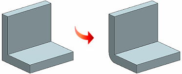

The Cleanup Utility command is enhanced as follows:
The thickness of the resulting Sheet Metal part is inferred after you select the solid body for cleanup.
If you select the Infer Thickness check box, NX infers the thickness of the solid body; otherwise, NX uses the user-defined value.
B-spline faces in a model are recognized and converted to a simpler form, such as planar or cylindrical.
Improved support to recognize sharp edges in a model and convert them to bend regions.
The inner sharp edge is replaced with a bend face of radius 0.02 mm. The model can have an inner sharp edge with an outer bend face, an outer sharp edge with an inner bend face, or both sharp edges.
For example, if a model has an inner sharp edge, an inner bend of radius 0.02 mm is created. The corresponding outer bend radius is equal to the sum of the inner bend radius and the input thickness.

The enhancements help you to clean up areas of a model that do not meet the requirements of the Convert to Sheet Metal command.
They also help you to clean up imported parts and improve successful conversion of non-NX Sheet Metal parts to NX Sheet Metal parts.
|
Application |
NX Sheet Metal |
|
Toolbar |
NX Sheet Metal→Convert Drop–down list→Cleanup Utility |
|
Menu |
Insert→Convert→Cleanup Utility |
|
Location in dialog box |
Thickness group→Infer Thickness check box |